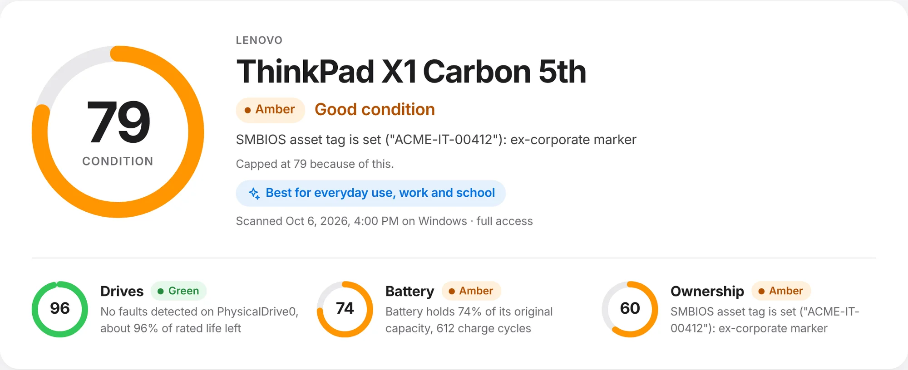
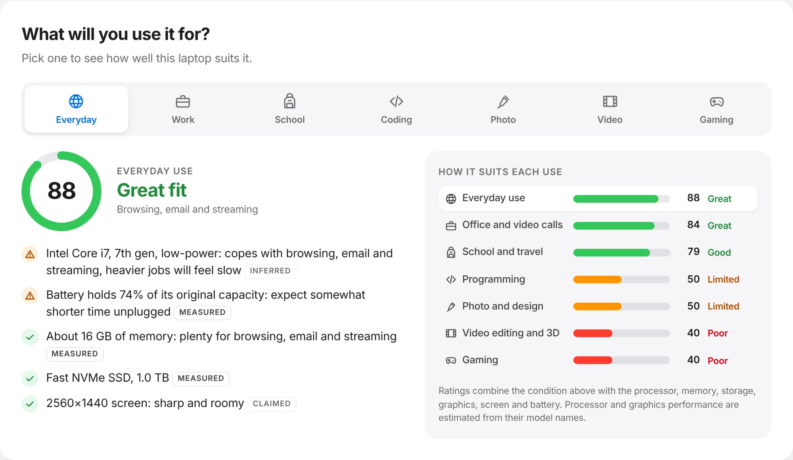
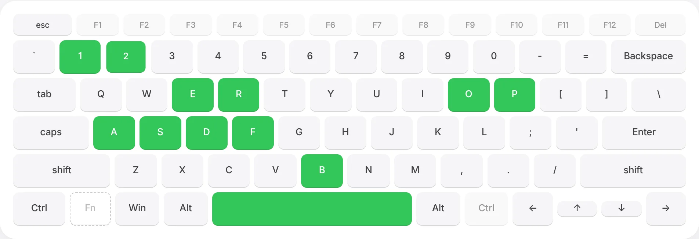
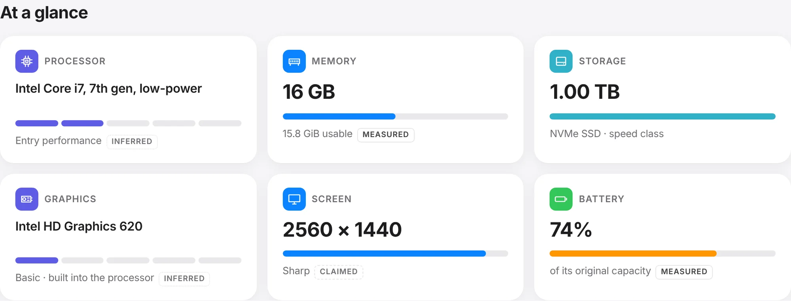
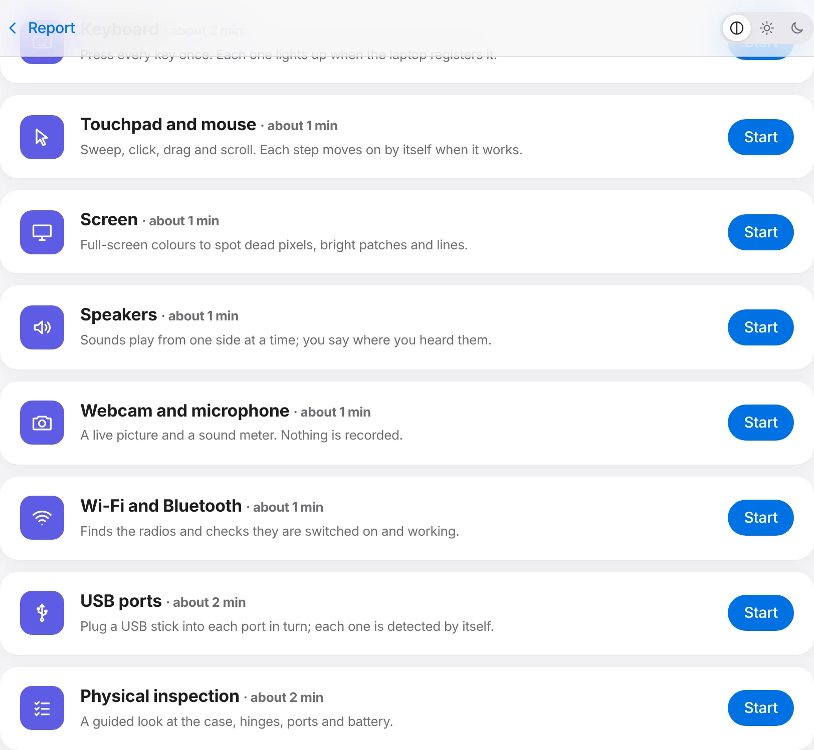

Drives
Error counters and wear, read from the drive itself
Pending and reallocated sectors, NVMe media errors and life used: the signals that predict failure.
probe reads the drives, battery and locks of a used computer, runs twelve hands-on tests and scores what it finds. All on the computer. Nothing is sent anywhere.
Free · Windows, macOS and Linux · Works offline
Why probe
Sellers rarely know, and listings never say. probe reads the drive's own error counters, the battery's real capacity and the management settings that let a company or an Apple Account take a computer back, then grades each one separately. A single serious problem is never averaged away by good parts.
Every value in a report says where it came from, so you can tell a sensor reading from a string the seller could have edited.
Reads straight from the drive controller, not from a label
What it checks
One scan reads the hardware directly. It takes about a minute and changes nothing on the computer.
See how it worksDrives
Pending and reallocated sectors, NVMe media errors and life used: the signals that predict failure.
Battery
Capacity against design and charge cycles, plus a drain test that estimates real running time.
Ownership
Device management, Autopilot, Activation Lock, Absolute tracking and ex-company asset tags.
Fit for you
Processor, memory, graphics, storage and screen, rated for school, work, coding, video or gaming.

How it works
Run probe on the computer you are looking at. It asks for the system password once so it can read drive health and serials.
Twelve guided checks: every key, the touchpad, screen, speakers, camera, ports, charger and battery.
A condition score, a fit rating for your use, and a short list of what to ask the seller.
Inside a report
One number out of 100, with a ring for drives, battery and ownership. A red problem caps it at 39, so a dying drive can never hide behind a good battery.
How the score worksPick what the computer is for and see a fit rating with the reasons: a 7th-gen dual-core can be great for school and poor for video editing.
What it rates
Software cannot feel a sticky key or see a dead pixel, so probe walks you through it. Each step watches for its own result and moves on by itself.
Run them yourself
Made for
Check a computer before you hand over the money.
A consistent intake check with a saved report.
Grade stock the same way, computer after computer.
Know what you are retiring or reissuing.
Why trust it
Below 80% of its design capacity a battery is worn out. probe shows exactly where yours sits.
sent anywhere during a scan. probe works fully offline and needs no account.
Measured, claimed or inferred: every value is labelled.
hands-on tests, from every key to the charger's wattage.

"probe never calls a computer healthy. A clean result lowers risk; it does not clear the machine."
From the rules every report follows
What it will not tell you
"Whether a computer is stolen. No public register of computer serials exists, and probe will not pretend otherwise."
"That a battery has not swollen. Lay a laptop flat and check the case: software cannot see that."
"That a missing reading is fine. If probe could not read something, the report says so and does not count it as a pass."
Download
One app, no account, no installer extras. Put it on a USB stick and take it to the next viewing.
Windows 10 and 11, 64-bit
Download installer .msi for IT deploymentApple silicon and Intel, macOS 11 or later
Download .dmg Command-line toolUbuntu, Debian and derivatives, 64-bit
Download .deb Command-line toolEarly builds are not code-signed yet: Windows may show "More info, Run anyway", and on a Mac right-click the app and choose Open the first time. All releases and checksums
Questions
No. Scans, tests and reports stay on the computer. Team sharing is optional and off by default; even then, only scans you choose are sent, to a server your shop runs.
Yes. probe checks laptops, desktops, all-in-ones and mini PCs. On a desktop it skips the battery and charger tests and leaves the battery out of the score, so it is never marked down for a part it was never meant to have.
Drive health and serial numbers need administrator rights. probe asks the system's own password prompt once, reads, and changes nothing. You can also scan without it and get a partial report.
Drives, battery and ownership are graded separately and combined, then capped by the worst finding: anything red holds the score to 39, anything amber to 79. Areas that could not be read are left out and named, never counted as full marks.
No, and nothing can: there is no public register of computer serials. probe does show company management and account locks, which are the usual reason a resold computer gets locked later.
Yes. Run the small probe-sync server, give each computer a token, and share scans from their reports. Any device can then see whether your team has scanned a computer before.
